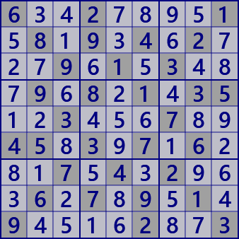

Introduction

This HP will explain more than 50 Sudoku algorithms. Several
elementary algorithms are helpful for humans to solve with pencils
and intelligence alone. Advanced algorithms are for programs.
i think, this problem is extremely difficult for humans to solve.
It would be better not to try. This is a problem handled by the program.
6..2....1.8.9.4.2...9.1.3...9.8.1.35..3...7..45.3.7.6...7.4.2...6.7.9.1.9....2..3
Rules of solving

The rule "Insert digit 1-9 for each row/column/block" is the
same as Sudoku. Contradiction as a solution method is prohibited.
Because Sudoku is a puzzle, it is trivial to be able to solve
any problem. This site deal with logically the algorithm to
explain truth or false. This is a local rule. i am aware that
there are different opinions.
The solution of Sudoku(digit array) on the upper is as shown.
But that is not a solution to the rules here. A logical
explanation for solving a solution is necessary.
Next...
This site is Sudoku analysis algorithm and C# program example.
If you understand these and complement your own code, you can assemble a program to solve Sudoku.
The best is to make your own code by referring to the example program.
The example program is used in GNPX,
but it is (often) changed by bug fix, improvement, or just a mood.
It would be better to develop your own algorithms and to incorporate them.
As for making Sudoku's problem, i will not explain directly.
Just combine Latin squares and analysis algorithms.
Win application GNPX and VisualStudio project(C#) can be downloaded.
GNPX has been updated to v4
 to GNPX v5.0
to GNPX v5.0